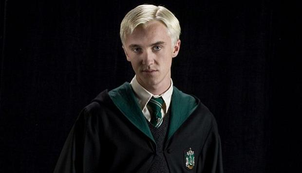

Draco Malfoy
Personaje de los libros de Harry Potter creados por la autora británica J. K. Rowling.
Por Agustina Opazo
Draco Malfoy es uno de los antagonistas de la serie Harry Potter creada por J.K Rowling. Él es un estudiante en el mismo año que Harry Potter en el colegio ficticio Hogwarts y pertenece a la casa de Slytherin.
RASGOS DEL
PERSONAJE
Los sentimientos de Draco hacia Harry siempre han estado basados en su mayor parte en la envidia. Aunque nunca buscó la fama, Harry era sin lugar a dudas la persona más admirada y de la que más se hablaba en el colegio, y esto naturalmente no le sentaba bien a un chico que se había educado en la creencia de que ocuparía una posición de casi realeza en la comunidad mágica.
Draco se caracteriza por ser un matón cobarde que manipula y lastima a la gente para conseguir lo que quiere, él cree que la riqueza y posición social de su familia le da el derecho de intimidar a aquellos que son más pobres que él, como Ron Weasley o con un status de sangre diferente como con Hermione Granger. Estas actitudes eran mayormente influenciadas por su padre, Lucius Malfoy, quien era un fiel seguidor del villano principal de la saga, Lord Voldemort.
Con Draco intenté demostrar que la negación y la repepresión de los conflictos internos solo generan personas con problemas y mucho más proclives a hacer daño a los demás.
J.K ROWLING
Con Draco intenté demostrar que la negación y la repepresión de los conflictos internos solo generan personas con problemas y mucho más proclives a hacer daño a los demás
J.K ROWLING
CAMBIO DE
ACTITUD
Algo comenzó a cambiar en la mente de Draco en su sexto año en Hogwarts, después de que Voldemort lo convirtiera en un mortífago y le impusiera le tarea de asesinar al directir del colegio, Albus Dumbledore, al final del año. Después de una serie de débiles intentos, Draco comenzó a a resquebrajarse bajo la enorme presión que Voldemort estaba poniendo sobre él. No estaba seguro de su capacidad para cumplir con tal misión, y le aterrorizaba pagar, junto con su familia, el precio de su fracaso. Al final Draco deserto, y junto a su padre renunciaron a ser mortífagos.
Como adulto, lamentó haberse unido a los mortífagos y perdió buena parte de su racismo, ya que era amable con sus antiguos compañeros de la escuela, y evidentemente, inculcó a su hijo el ser una mejor persona de lo que él fue.
INTERPRETACIONES
El actor británico Tom Felton fue el encargado de interpretar a Draco Malfoy en las 8 peliculas de Harry Potter producidas por Warner Bros. desde 2001 hasta 2011. Felton también proporcionó su voz en las adaptaciones de videojuegos de Harry Potter y la Orden del Fénix y Harry Potter y el misterio del príncipe.
En la obra de teatro oficial, Harry Potter and the Cursed Child, Draco Malfoy en su versión adulta ha sido interpretado por Alex Price, James Howard y Tom Wren. Tom Felton admitio que le encataria volver a interpretar a Draco si se llegase a hacer una película de dicha obra de teatro.